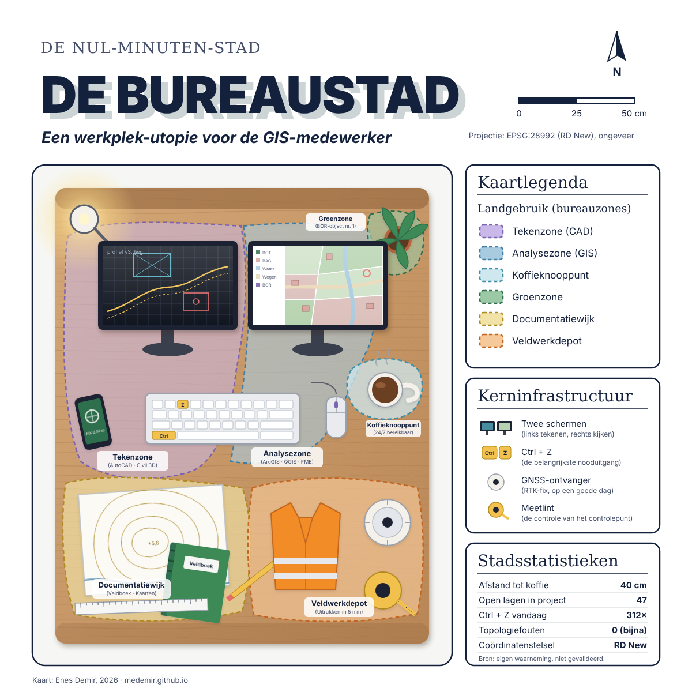

De Bureaustad: een kaart van mijn bureau
De ene GIS-medewerker brengt gemeenten in kaart, de andere waterleidingen. Ik besloot het gebied te karteren dat ik het beste ken: mijn eigen bureau. Een stad zonder reistijd, met één koffieknooppunt en een coördinatenstelsel dat altijd klopt. Bijna altijd.

Landgebruik
Zoals elke goede gemeente heeft de Bureaustad een duidelijk bestemmingsplan. Op de kaart staan zes zones.
- Tekenzone (CAD). Het linkerscherm, met AutoCAD en Civil 3D. Hier ontstaan profielen, matenplannen en uitzettekeningen.
- Analysezone (GIS). Het rechterscherm, met ArcGIS, QGIS en FME. Hier controleer ik of de BAG, de BGT en de BOR-data nog met elkaar praten.
- Koffieknooppunt. Het drukste knooppunt van de stad. Het is altijd open en ligt binnen handbereik van beide zones.
- Groenzone. Eén plant, met een eigen objectpaspoort. Beheerniveau: water geven als ik eraan denk.
- Documentatiewijk. Een papieren kaart met hoogtelijnen, een veldboek, een liniaal en een potlood. Niet alles hoeft digitaal.
- Veldwerkdepot. Veiligheidshesje, GNSS-ontvanger en meetlint. Klaar om binnen vijf minuten naar buiten te gaan.
Kerninfrastructuur
Twee schermen vormen de ruggengraat: links tekenen, rechts kijken of het klopt. De belangrijkste weg in de stad is de combinatie Ctrl + Z, op het toetsenbord geel gemarkeerd. De GNSS-ontvanger levert een RTK-fix, op een goede dag. En het meetlint is de controle van het controlepunt: als de meting twijfelachtig is, gaat het lint eruit.
Stadsstatistieken
| Kenmerk | Waarde |
|---|---|
| Afstand tot koffie | 40 cm |
| Open lagen in project | 47 |
| Ctrl + Z vandaag | 312× |
| Topologiefouten | 0 (bijna) |
| Coördinatenstelsel | RD New |
Waarom deze kaart?
Ik zag een kaart van een bed als "nul-minuten-stad" en dacht: dat kan ik ook, maar dan met een bureau. Het is een knipoog, maar het laat ook zien hoe ik naar dingen kijk. Alles heeft een plek, een functie en een legenda. Dat is precies wat ik in mijn werk doe met de openbare ruimte van een gemeente.
Wil je een echte kaart laten maken, of je geodata op orde brengen? Neem contact op.